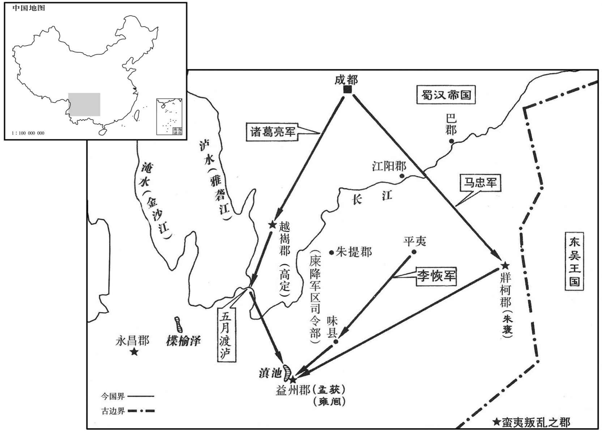
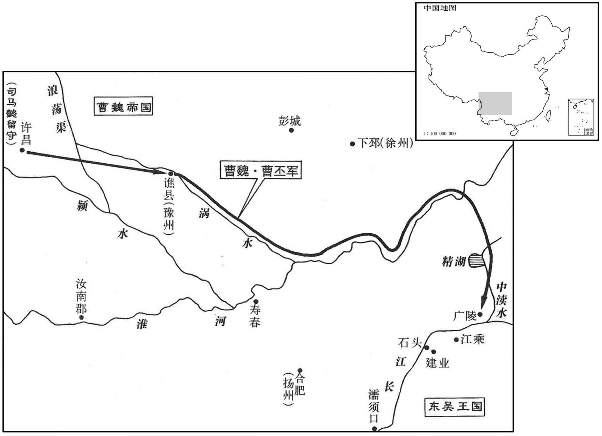

公元225年资治通鉴：本年记事、原文与白话对照
按原书编年位置阅读；追叙和史论不等于本年发生的事件。白话采用所据译本，缺译不以生成译文补齐。
卷70 · 本年记事
公元225年 · 魏世祖文皇帝黄初六年
六年〔（乙巳、二二五）〕
上传原文的注释括号有异常，字符原样保留；无法可靠划分的段落默认全文显示。
本年事件索引（现代整理）

本年形势与背景参考图

本年形势与背景参考图
春，二月，诏以陈群为镇军大将军，随车驾董督众军，录行尚书事；司马懿为抚军大将军，留许昌，督后台文书。〔魏、晋之制，大将军不开府者，品秩第二，其禄与特进同，置长史、司马、主簿、诸曹官属。行尚书，谓尚书之随驾者；后台，谓尚书台之留许昌者也。〕三月，帝行如召陵，通讨虏渠；〔召陵县，汉属汝南郡；晋志属颍川郡。贤曰：召陵故城在今豫州郾城县东，通讨虏渠以伐吴也。召，读曰邵。〕乙巳，还许昌。
春季，二月，文帝下诏，以陈群为镇军大将军，随御驾出征，负责督察各路军队，总领随驾尚书台事务；以司马懿为抚军大将军，留守许昌，负责处理留守尚书台公文。三月，文帝前往召陵，开通讨虏渠；乙巳（二十八日），回到许昌。
并州刺史梁习讨轲比能，大破之。
并州刺史梁习讨伐轲比能，大获全胜。
汉诸葛亮率众讨雍闿，参军马谡送之数十里。〔谡，所六翻。〕亮曰：虽共谋之历年，今可更惠良规。」谡曰：「南中恃其险远，不服久矣；今日破之，明日复反耳。〔复，扶又翻；下同。〕今公方倾国北伐以事强贼，彼知官势内虚，汉俗谓天子为县官，亦谓为国家。官势，犹言国势也。〕其叛亦速。若殄尽遗类以徐后患，既非仁者之情，且又不可仓卒也。〔卒，读曰猝。〕夫用兵之道，攻心为上，攻城为下，心战为上，兵战为下，愿公服其心而已。」〔此马谡所以为善论军计也。〕亮纳其言。谡，良之弟也。
两版字句有差异，建议核对原文。
蜀汉诸葛亮率兵讨伐雍，参军马谡送行数十里。诸葛亮说：“虽然我们一起谋划此事多年，今天请你再一次提出好计划。”马谡说：“南中依恃地形险要和路途遥远，叛乱不服已经很久了。即使我们今天将其击溃，明天他们还要反叛。目前您正准备集中全国的力量北伐，以对付强贼，叛匪知道国家内部空虚，就会加速反叛。如果将他们全部杀光以除后患，既不是仁厚者所为，也不可能在短期内办到。用兵作战的原则，以攻心为上，攻城为下；以心理战为上，以短兵相接为下，望您能使其真心归服。”诸葛亮采纳了马谡的建议。马谡是马良的弟弟。
辛未，帝以舟师复征吴，群臣大议。宫正鲍勋谏曰：〔据勋传，宫正，即御史中丞也。「王师屡征而未有所克者，盖以吴、蜀唇齿相依，凭阻山水，有难拔之势故也。往年龙舟飘荡，隔在南岸，〔事见上。〕圣躬蹈危，臣下破胆，此时宗庙几至倾覆，〔几，居希翻。〕为百世之戒。今又劳兵袭远，日费千金，〔兵法曰：兴师十万，日费千金。〕中国虚耗，今〔【章：甲十六行本「今」作「令」；乙十一行本同；退斋校同。】〕黠虏玩威，〔国语，祭公谋父曰：先王耀德不观兵。夫兵戢而时动，动则威，观则玩，玩则无震。黠，下八翻。〕臣窃以为不可。」帝怒，左迁勋为治书执法。勋，信之子也。〔鲍信从武帝战死。〕夏，五月，戊申，帝如谯。
本段缺少可靠对应白话，原文完整保留；未使用生成译文。
吴丞相北海孙劭卒。初，吴当置丞相，众议归张昭，吴王曰：「方今多事，职大者责重，非所以优之也。」及劭卒，百僚复举昭，吴王曰：「孤岂为子布有爱乎！〔为，于伪翻。〕领丞相事烦，而此公性刚，所言不从，怨咎将兴，非所以益之也。」六月，以太常顾雍为丞相、平尚书事。雍为人寡言，举动时当，〔当，丁浪翻。〕吴王尝叹曰：「顾君不言，言必有中。」至饮宴欢乐之际，〔中，竹仲翻。乐，音洛；下同。〕左右恐有酒失，而雍必见之，是以不敢肆情。吴王亦曰：「顾公在坐，〔坐，沮卧翻。〕使人不乐。」其见惮如此。初领尚书令，封阳遂乡侯；拜侯还寺，〔寺，官舍也。〕而家人不知，后闻，乃惊。及为相，其所选用文武将吏，各随能所任，心无适莫。〔适，音的。心之所主为适，心之所否为莫。〕时访逮民间及政职所宜，辄密以闻，若见纳用，则归之于上；不用，终不宣泄；〔宣，明也，布也。泄，漏也。〕吴王以此重之。然于公朝有所陈及，辞色虽顺而所执者正；军国得失，自非面见，口未尝言。王常令中书郎〔中书郎，魏曰通事郎，晋为中书侍郎。〕诣雍有所咨访，若合雍意，事可施行，即相与反复究而论之，为设酒食；〔为，于伪翻；下同。〕如不合意，雍即正色改容，默然不言，无所施设。郎退告王，王曰；「顾公欢悦，是事合宜也；其不言者，是事未平也。孤当重思之。」〔重，直用翻。〕江边诸将，各欲音功自效，多陈便宜，有所掩袭。王以访雍。雍曰；「臣闻兵法戒于小利，此等所陈，欲邀功名为其身，非为国也。〔为，于伪翻。〕陛下宜禁制，苟不足以曜威损敌，所不宜听也。」王从之。
吴丞相北海人孙劭去世。当初，吴国要设置丞相一职，大家首推昭。吴王说：“如今是多事之秋，职位越高，责任愈重，这一职务对张昭来说，并非优待。”孙劭去世，文武官员再次推举张昭，吴王又说：“孤岂不敬爱张子布？丞相负责的政务烦多，而张昭性情刚烈，我若不听从他，他就会不满和怨忿，这对他并没有什么好处。”六月，任太顾雍为丞相，平尚书事。顾雍为人沉默寡言，举止稳妥，吴王曾赞叹说：“顾君不说话则已，话即能抓住要害。”每次设筵饮酒作乐，大臣们都恐怕酒后失态，被在场的顾雍到，所以不敢放开酒量。吴王也说：“顾公在座，使人不乐。”可见大臣和吴王多么忌惮他。顾雍刚兼任尚书令的时候，被封变阳遂乡侯；拜过爵位后，回到官邸，家人仍不知道他已被封侯，后来听说，都很吃惊。及至受任为丞相，他选用文官武将，都各按才能加以任用，而不夹杂自己的好恶。常常私下到民间访查政治得失，每当有好的建议，都秘密上报，如被采纳，将功劳归于主上；如不被采纳，则始终不泄露出去；吴王为此很看重他。然而他在朝廷发表意见时，言辞虽然和顺，却能将正确意见坚持到底；对于政治得失，若非亲眼所见，决不妄加评论。吴王有事情，常令中书郎到顾雍那里咨询访问。如果顾雍同意，觉得此事可以施行，便与中书郎反复讨论研究，并为他预备酒饭；如果不同意，顾雍便表情严肃，默然无语，什么都不预备。中书郎回去将情况报告吴王，吴王说：“顾公高兴，说明此事应该办；他不发表意见，表明办法还不稳妥，孤应当反复考虑。”驻守长江岸边的将领，都想建功立业，报效国家，很多人上书，认为时机有利，应发兵袭击魏军。吴王为此事询访顾雍，顾雍说：“我听说贪图小利为兵家所戒，他们的这些条陈，是要为自己邀取功名，而不是为国家着想。陛下应加制止，如果不能扬我威武，重创敌人，就不应听从。”吴王采纳了顾雍的意见。
利成郡兵蔡方等反，〔利成县，汉属东海郡，魏武始分置利成郡。〕杀太守徐质，推郡人唐咨为主，诏屯骑校尉任福等讨平之。〔任，音壬。〕咨自海道亡入吴，吴人以为将军。
利成郡士兵蔡方等人造反，杀太守徐质，推举同郡人唐咨作首领。文帝命令屯骑校尉任福等讨平叛乱。唐咨从海路逃到吴国，被吴国任命为将军。
秋，七月，立皇子鉴为东武阳王。
秋季，七月，魏文帝立皇子曹鉴为东阳武王。
汉诸葛亮至南中，所在战捷。亮由越巂入，〔巂，音髓。〕斩雍闿及高定。使庲降督益州李恢由益州入，〔裴松之曰：讯之蜀人云：庲降，地名，去蜀三千余里。时未有宁州，号为南中，立此职以总摄之；晋泰始中，始分为宁州平夷县，属牂柯郡。余据蜀志，庲降督住平夷，盖侨治，非庲降之本地也。至马忠为庲降督，乃自平夷移住建宁味县，后遂为宁州治所。〕门下督巴西马忠由牂柯入，击破诸县，复与亮合。〔牂柯，音臧哥。复，如字，又扶又翻。〕孟获收闿余众以拒亮。获素为夷、汉所服，亮募生致之，既得，使观于营陈之间，〔陈，读曰阵；下同。〕问曰：「此军何如﹖」获曰：「向者不知虚实，故败。今蒙赐观营陈，若祇如此，即定易胜耳。」〔易，以豉翻；下同。〕亮笑，纵使更战。七纵七禽而亮犹遣获，获止不去，曰：「公，天威也，南人不复反矣！」〔复，扶又翻。〕亮遂至滇池，〔滇池县益州郡。池周回二百余里，水源深广，而末更浅狭，有似倒流，故谓之滇池。滇，音颠。〕
蜀汉诸葛亮到达南中，征讨叛乱，所到必胜。诸葛亮从越进兵，斩杀雍柯和高定。派降督、益州人李恢从益州进兵，门下督、巴西人马忠从进兵，击溃南中各县的叛军，再度和诸葛亮会合，孟获收拾雍的残部 抗拒诸葛亮。孟获深得当地汉人和夷族的信赖，诸葛亮要生擒孟获，以后果然将孟获俘获，让他参观了蜀军的军营战阵，问他说：“这样的军队如何？”孟获说：“以前不知道你们的虚实，所以遭到失败。如今蒙您允许我参观你们的军营战阵，如果贵军只是这样的军队，我一定能轻易取胜。”诸葛亮笑了笑，将孟获释放，要他再战。前后把孟获放回七次，又生擒七次，最后诸葛亮仍将孟获释放，孟获却不再走了，对诸葛亮说：“您有天威１南方人不会再反叛了！”于是诸葛亮到达滇池。
益州、永昌、牂柯、越巂四郡皆平，亮即其渠率而用之。〔即，就也。渠，大也。渠率，大率也。率，与帅同，音所类翻。〕或以谏亮，亮曰：「若留外人，则当留兵，兵留则无所食，一不易也；加夷新伤破，父兄死丧，留外人而无兵者，必成祸患，二不易也；又，夷累有废杀之罪，〔丧，息浪翻。易，以豉翻；下同。杀，读曰弒；杀其郡将，是亦弒也。〕自嫌衅重，若留外人，终不相信，三不易也。今吾欲使不留兵，不运粮，而纲纪粗定，夷汉粗安故耳。」〔粗，坐五翻。〕亮于是悉收其俊杰孟获等以为官属，出其金、银、丹、漆、耕牛、战马以给军国之用。自是终亮之世，夷不复反。〔复，扶又翻。〕
益州、永昌、柯、越四郡都被平定了，诸葛亮仍然任用当地原来的首领为四郡的地方官吏。有人劝诸葛亮不要这样做，诸葛亮说：“如果留外地人为官，则要留驻军队，留驻军队，则粮秣供应困难，这是第一个难题；这些夷族刚受过战争之苦，父兄多有死伤，怨气未消，任用外地人而不留驻军队，定有祸患，这是第二个难题；这些夷族叛乱分子屡次三番杀死和废掉官吏，自知有罪，与我们隔阂很深，若留下外地人为官，终究难以被他们信任，这是第三个难题。我现在是要不留军队，不转运粮食，使法令、政纪大体得以贯彻，让夷族和汉人大何安定下来。”于是诸葛亮网罗孟获等当地的著名人物，任命为地方官使，让他们贡献金、银、丹、漆、耕牛、战马，供给军队和朝廷使用。从此之后，在诸葛亮的有生之年，这一地区的夷族再也没有反叛。
八月，帝以舟师自谯循涡入淮。〔水经：阴沟水，出河南阳武县蒗嬢渠，东南至沛为涡水，涡水东径谯郡，又东南至下邳淮阴县入于淮。杜佑曰：亳州治谯县，有涡水，涡音戈。〕尚书蒋济表言水道难通，帝不从。冬，十月，如广陵故城，〔广陵故城谓之芜城，今其处不可考。〕临江观兵，戎卒十余万，旌旗数百里，有渡江之志。吴人严兵固守。时天寒，冰，舟不得入江。帝见波涛汹涌，〔汹，许拱翻。〕叹曰：「嗟乎，固天所以限南北也！」遂归。孙韶遣将高寿等率敢死之士五百人，于径路夜要帝，〔要，一遥翻。〕帝大惊。寿等获副车、羽盖以还。〔还，从宣翻，又如字；下同。〕于是战船数千皆滞不得行，议者欲就留兵屯田，蒋济以为：「东近湖，北临淮，若水盛时，贼易为寇，不可安屯。」〔近，其靳翻。易，以豉翻。〕帝从之，车驾即发。还，到精湖，〔据蒋济传，精湖在山阳；山阳在下邳淮阴县界，今楚州山阳县。〕水稍尽，尽留船付济。船连延在数百里中，济更凿地作四五道，蹴船令聚；豫作土豚〔目录作「土塍」；广韵作「土坉」，注云：以草裹土筑城及镇水也。〕遏断湖水，〔断，丁管翻。〕皆引后船，一时开遏入淮中，乃得还。
八月，魏文帝命令水军从谯沿涡水进入淮河。尚书蒋济上表说水路很难通行，文帝不听。冬季，十月，前往广陵故城，在长江岸边检阅军队，魏军将士十余万，旌旗飘荡数百里，大有跨过长江的意图。吴布置军队严阵以待。当时天气寒冷，江边结冰，战船无法入江。文帝眼望长江的汹涌波涛，叹息说：“哎！这是上天注定要分割大江南北啊！”于是下令撤军。孙韶派部将高寿等率敢死队五百人，从小路夜袭文帝，文帝大惊。高寿等缴获了文帝的副车、羽盖而回。当时，魏军战船数千艘因阻滞无法撤退，有人建议留下军队就地屯田，蒋济认为：“此地东近高邮湖，北滨准河，在水在的时候，很容易被吴军抄掠，不能在这里屯田。”文帝采纳了蒋济的意见，车驾和军队当即开拔。撤至精湖，水路几乎没有了，文帝将船只都留给了蒋济。战船前后相连数百里，蒋济令人挖开四五条水道，将船全部集中在一起；并提前堆好土坝，截断湖水，把后面的船都拖入，再掘开水坝，船只全部随水涌入淮河，这样，魏军的舰船才得以返回。
十一月，东武阳王鉴薨。
十一月，东武阳王曹鉴去世。
十二月，吴番阳贼彭绮攻没郡县，众数万人。〔番，蒲河翻。〕
十二月，吴番阳贼人彭绮攻陷郡县城池，有部众数万人。
译本中未与胡注本可靠对应的内容
以下另列供核对版本差异，不并入胡注本正文。
译本所附古文
[4]辛未，帝以舟师复征吴，群臣大议。宫正鲍勋谏曰：“王师屡征而未有所克者，盖以吴、蜀唇齿相依，凭阻山水，有难拔之势故也。往年龙舟飘荡，隔在南岸，圣躬蹈危，臣下破胆，此时宗庙几至倾覆，为百世之戒。今又劳兵袭远，日费千金，中国虚耗，今黠虏玩威，臣窃以为不可。”帝恐，左迁勋为治书执法。勋，信之子也。夏，五月，戊申，帝如谯。
译本白话
辛未（疑误），魏文帝将率水军大举攻吴，召集群臣讨论。宫正鲍勋劝谏说：“朝廷屡次出动大军征讨，之所以没有取得成果，是因为吴、蜀两国唇齿相依，凭借地势险要和长江的阻隔，有难以攻克的优越条件。去年亲征，龙船被波涛漂荡在长江南岸遇阻，陛下身陷危境，大臣们心惊胆破，那时朝廷几乎被倾覆，应作为后世百代的警戒 。如今又劳师动众，远途征讨，每天的经费需要用千金，国家的钱财都白白耗费掉了，而狡猾的敌人仍在那里耀武扬威，我认为再不可以这样了。”文帝听到鲍勋这番议论，大为愤怒，将鲍勋降职为治书执法。鲍勋是鲍信的儿子。夏季，五月，戊申（初二），文帝前往谯郡。